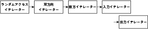

# イテレーター詳細
# イテレーターとポインターの関係
arrayのイテレーターの実装を振り返ろう。前回実装したイテレーターは、リファレンスとインデックスを使うものだった。
template < Array >
struct array_iterator
{
using reference = typename Array::reference ;
Array & a ;
std::size_t i ;
array_iterator( Array * a, std::size_t i )
: a(a), i(i) { }
reference operator *() const
{ return a[i] ; }
array_iterator & operator ++()
{
++i ;
return *this ;
}
reference operator [] ( std::size_t n )
{ return a[i + n] ; }
} ;
このコードは単にポインターをクラスで実装しているだけではないだろうか。ならば、ポインターでイテレーターを実装することもできるのではないか。
template < typename Array >
struct array_iterator
{
using pointer = typename Array::pointer ;
using reference = typename Array::reference ;
pointer p ;
array_iterator( pointer p )
: p(p) { }
reference operator *()
{ return *p ; }
array_iterator & operator ++()
{
++p ;
return *this ;
}
reference operator[] ( std::size_t n )
{ return p[n] ; }
} ;
このコードは本当にポインターをクラスで実装しているだけだ。ならばイテレータークラスの代わりにポインターでもいいのではないだろうか。
template < typename T, std::size_t N >
struct array
{
T storage[N] ;
// ポインター
using iterator = T * ;
iterator begin()
{ return &storage[0] ; }
iterator end()
{ return begin() + N ; }
} ;
これは動く。そして実際のstd::arrayの実装もこうなっている。
実はイテレーターはポインターを参考にして作られた。インクリメントで次の要素を参照、operator *で参照先の要素にアクセスといった操作は、すべてポインターの操作をより抽象化したものだ。
ポインターの操作をすべてサポートしたイテレーターは、ランダムアクセスイテレーターと呼ばれる。
# イテレーターカテゴリー
イテレーターにはサポートしている操作に応じて以下のような種類が存在する。
- 入力イテレーター(Input Iterator)
- 出力イテレーター(Output Iterator)
- 前方イテレーター(Forward Iterator)
- 双方向イテレーター(Bidirectional Iterator)
- ランダムアクセスイテレーター(Random Access Iterator)
イテレーターの関係は以下のようになっている。
TODO: 図示
ランダムアクセスイテレーター → 双方向イテレーター → 前方イテレーター → 入力イテレーター
→ 出力イテレーター

矢印A → BはAがBであることを意味している。
ランダムアクセスイテレーターは双方向イテレーターのすべての操作をサポートする。故にランダムアクセスイテレーターは双方向イテレーターである。
同様に、双方向イテレーターは前方イテレーターである。前方イテレーターは入力イテレーター/出力イテレーターである。
AはBであることに加えて、追加の操作をサポートしている。
# ランダムアクセスイテレーター
ランダムアクセスイテレーターは名前のとおりランダムアクセスができる。イテレーターがn番目の要素を指すとき、n+m番目の要素を指すことができる。mは負数でもよい。
template < typename RandomAccessIterator >
void f( RandomAccessIterator i, int n )
{
i + n ;
i - n ;
n + i ; // i+nと同じ
n - i ; // n-iと同じ
i + (-n) ; // i - nと同じ
// i = i + n ; と同じ
i += n ;
// i = i - n ; と同じ
i -= n ;
}
と書ける。nの型が符号付き整数型でよい。i + (-5)はi-5と同じ意味だ。
イテレーター間の距離を計算したいときはイテレーター同士を引き算する。
template < typename RandomAccessIterator >
void f( RandomAccessIterator a, RandomAccessIterator b )
{
b - a ; // aからbまでの距離
a - b ; // bからaまでの距離
}
イテレーター間の距離は負数にもなる。
template < typename RandomAccessIterator >
void f( RandomAccessIterator a )
{
auto b = a ;
// bはaより3進んでいる
++b ; ++b ; ++b ;
b - a ; // 3
a - b ; // -3
}
イテレーターbはaより3進んでいるので、aからbまでの距離であるb - aは3になる。ではbからaまでの距離であるa - bはどうなるかというと、$-3$になる。bにとってaは3戻っているからだ。
イテレーター iのn個先の要素を参照したい場合は、
template < typename RandomAccessIterator >
void f( RandomAccessIterator i, std::size_t n )
{
// *(i + n) ; と同じ
i[n] ;
}
と書ける。
ランダムアクセスイテレーターは大小比較ができる。
template < typename RandomAccessIterator >
void f( RandomAccessIterator i, RandomAccessIterator j )
{
i < j ;
i > j ;
i <= j ;
i >= j ;
}
イテレーターの比較は、イテレーターが参照する要素の値の比較ではない。イテレーターが参照する要素の順番の比較だ。
n番目の要素を参照するイテレーターは、n+1番目の要素を参照するイテレーターより小さい。n-1番目を参照するイテレーターより大きい。
template < typename Iterator >
void f( Iterator i )
{
// jはn+1番目を指す
auto j = i + 1 ;
i < j ; // true
i > j ; // false
}
ここまでの操作はランダムアクセスイテレーターにしかできない。
双方向イテレーター以下のイテレーターができる比較は同値比較だけだ。
template < typename Iterator >
void f( Iterator i, Iterator j )
{
i == j ;
i != j ;
}
イテレーターは同じn番目の要素を指しているときに等しいと比較される。
template < typename Iterator >
void f( Iterator i )
{
auto j = i ;
i == j ; // true
++j ;
i = j ; // false
}
# 双方向イテレーター
双方向イテレーターは名前のとおり双方向のイテレーターの移動ができる。双方向というのはイテレーターが参照しているn番目の要素のn-1番目の要素とn+1番目の要素だ。
template < typename BidirectionalIterator >
void f( BidirectionalIterator i )
{
++i ; // i+1
--i ; // i-1
// r1, r2は変更する前のiの値
auto r1 = i++ ;
auto r2 = i-- ;
}
と書ける。この操作は前方イテレーターにはできない。
1個ずつ移動できるのであれば、イテレーターをn個進めることもできそうなものだ。実際、双方向イテレーターを以下のようにしてn個進めることができる。
template < typename BidirectionalIterator >
BidirectionalIterator
nth_next( BidirectionalIterator iter, std::size_t n )
{
for ( std::size_t i = 0 ; i != n ; ++i )
++iter ;
return iter ;
}
確かにこれはできる。できるが、効率的ではない。双方向イテレーターが提供される場合というのは、ランダムアクセスが技術的に可能ではあるが非効率的な場合だ。具体的なデータ構造を出すと、例えばリンクリストがある。リンクリストに対するランダムアクセスは技術的に可能であるが非効率的だ。
# 前方イテレーター
前方イテレーターは前方にしか移動できない。イテレーターが0番目の要素を指しているならば1番目、1番目の要素を指しているならば2番目に移動できる。
template < typename ForwardIterator >
void f( ForwardIterator i )
{
++i ;
}
前方イテレーターにはマルチパス保証がある。イテレーターの指す要素を動かす前のイテレーターの値を保持しておき、保持した値を動かしたとき、2つのイテレーターは同一になるという保証だ。
template < typename ForwardIterator >
void f( ForwardIterator i )
{
// 動かす前の値を保持
auto prev = i ;
// 次の要素を指す
++i ;
// 動かす前の値も次の要素を指すようにする
++prev ;
// true
bool b = ( i == prev ) ;
// r1, r2は同じ要素を指す
auto & r1 = *i ;
auto & r2 = *prev ;
}
入力イテレーター、出力イテレーターにはこの保証がない。
# 入力イテレーター
入力イテレーターはイテレーターの比較、イテレーターの参照、イテレーターのインクリメントができる。
template < typename InputIterator >
void f( InputIterator i, InputIterator j )
{
// 比較
bool b1 = (i == j) ;
bool b2 = (i != j) ;
// 参照
*i ;
// (*i).m と同じ
i->m ;
// インクリメント
++i ;
i++ ;
}
入力イテレーターの参照は、読み込むことしか保証されていない。
template < typename InputIterator >
void f( InputIterator i )
{
// OK
auto value = *i ;
// エラー
*i = value ;
}
書き込みは出力イテレーターの仕事だ。
# 出力イテレーター
出力イテレーターはイテレーターのインクリメントと、イテレーターの参照への代入ができる。
template < typename OutputIterator >
void f( OutputIterator i, typename OutputIterator::value_type v )
{
// 参照への代入
*i = v ;
// インクリメント
++i ;
i++ ;
}
出力イテレーターを参照した結果は定められていない。voidかもしれない。したがって出力イテレーターの値を読むのは意味がない。
template < typename OutputIterator >
void f( OutputIterator i )
{
// 意味がない
auto value = *i ;
}
# iterator_traits
イテレーターカテゴリーやイテレーターの参照する値を見分けるためのライブラリとして、iterator_traits<T>がある。これは以下のようになっている。
namespace std {
template < typename T >
struct iterator
{
using difference_type = ... ;
using value_type = ... ;
using pointer = ... ;
using reference = ... ;
using iterator_category = ... ;
} ;
}
difference_typeはイテレーター同士の距離を指す数値だ。
template < typename Iterator >
void f( Iterator i, Iterator j )
{
// イテレーター同士の距離
typename std::iterator_traits<Iterator>::difference_type diff = j - i ;
}
value_typeはイテレーターの参照する値の型、pointerはそのポインター型、referenceはそのリファレンス型だ。
template < typename Iterator >
void f( Iterator i )
{
// 値型
typename std::iterator_traits<Iterator>::value_type v = *i ;
// ポインター型
typename std::iterator_traits<Iterator>::pointer p = &v ;
// リファレンス型
typename std::iterator_traits<Iterator>::reference r = v ;
}
iterator_categoryはイテレーターカテゴリーを示す型で、以下のようになっている。
namespace std {
struct input_iterator_tag { };
struct output_iterator_tag { };
struct forward_iterator_tag: public input_iterator_tag { };
struct bidirectional_iterator_tag: public forward_iterator_tag { };
struct random_access_iterator_tag: public bidirectional_iterator_tag { };
}
forward_iterator_tag以降のコロン文字のあとに続くコードについては、いまは気にしなくてもよい。これは派生というまだ説明していないクラスの機能だ。
あるイテレーターがあるイテレーターカテゴリーを満たすかどうかを調べるには以下のようにする。
template < typename tag, typename Iterator >
constexpr bool is_category_of( )
{
using iter_tag = typename std::iterator_traits<Iterator>::iterator_category ;
return std::is_base_of_v< tag, iter_tag> ;
}
int main()
{
using iterator = std::vector<int>::iterator ;
bool b = is_category_of< std::forward_iterator_tag, iterator >() ;
// vectorのイテレーターはランダムアクセスイテレーターなので前方イテレーターでもある
std::cout << b ;
}
このコードはまだ学んでいないC++の機能をふんだんに使っているので、現時点で理解するのは難しい。
# イテレーターカテゴリーの実例
イテレーターカテゴリーについて学んだので、イテレーターカテゴリーの実例について見ていこう。
# 出力イテレーター
前方イテレーター以上のイテレーターカテゴリーを満たすイテレーターはすべて、出力イテレーターとして使える。例えばstd::arrayの内容をstd::vectorにコピーしたければ以下のように書ける。
int main()
{
std::array<int, 5> a = {1,2,3,4,5} ;
std::vector<int> v(5) ;
std::copy( std::begin(a), std::end(a), std::begin(v) ) ;
}
std::vectorのイテレーターは出力イテレーターとして振る舞う。
出力イテレーターの要件しか満たさないイテレーターは、例えば以下のようなものだ。
struct cout_iterator
{
// --- ボイラープレートコード
// 出力イテレーターでは使わないのでvoidでいい
using difference_type = void ;
using value_type = void ;
using reference = void ;
using pointer = void ;
// イテレーターカテゴリーは出力イテレーター
using iterator_category = std::output_iterator_tag ;
// 何もしない
// 自分自身を返すだけ
cout_iterator & operator *() { return *this ; }
cout_iterator & operator ++() { return *this ; }
cout_iterator & operator ++(int) { return *this ; }
// --- ボイラープレートコード
// ここが肝心
template < typename T >
cout_iterator & operator =( T const & x )
{
std::cout << x ;
return *this ;
}
} ;
int main()
{
std::vector<int> v = {1,2,3,4,5} ;
cout_iterator out ;
std::copy( std::begin(v), std::end(v), out ) ;
}
cout_iteratorは*i = x;と書いたときに、値xをstd::coutで出力する。
cout_iteratorは出力イテレーターの要件を満たすのでstd::copyに渡せる。std::copyはイテレーターを順番に*out = *i ;のように実行するので、結果として値がすべてstd::coutで出力される。
cout_iteratorはとても便利なので、標準ライブラリにはstd::ostream_iterator<T>がある。
int main()
{
std::vector<int> v = {1,2,3,4,5} ;
std::ostream_iterator<int> out(std::cout) ;
std::copy( std::begin(v), std::end(v), out ) ;
}
ostream_iteratorは出力ストリーム(ostream)に対するイテレーターだ。コンストラクターに出力先の出力ストリームを渡すことで値を出力先に出力してくれる。今回はstd::coutだ。
上のような出力イテレーターがoperator =で以下のようなことをしていたらどうだろう。
template < typename Container >
struct back_inserter
{
back_inserter( Container & c )
: c(c) { }
// その他のボイラープレートコード
back_inserter & operator =( const typename Container::value_type & value )
{
c.push_back(value) ;
}
Container & c ;
} ;
template < typename Container >
void f( Container const & c )
{
// cの全要素をコピーしたい
std::vector< typename Container::value_type > temp ;
auto out = back_inserter(temp) ;
std::copy( std::begin(c), std::end(c), out ) ;
}
このコードが何をするかわかるだろうか。コンテナーcの全要素を出力イテレーターで出力する。出力イテレーターは渡された値valueをtemp.push_back(value) ;する。その結果、tempはcのすべての要素を保持していることになる。
C++の標準ライブラリにはstd::back_inserterがある。
int main()
{
std::vector<int> v = {1,2,3,4,5} ;
std::vector<int> temp ;
auto out = std::back_inserter(temp) ;
std::copy( std::begin(v), std::end(v), out ) ;
}
std::back_inserter(c)はコンテナーcに出力イテレーターとして渡された値をpuch_backする。
ただし、std::back_inserterは古いライブラリなので、ここで示した方法とは少し違う実装がされている。
// 出力イテレーター
template < typename Container >
struct back_insert_iterator
{
back_insert_iterator( Container & c )
: c(&c) { }
Container * c ;
// その他のコード
} ;
// 出力イテレーターを返す関数
template < typename Container >
back_insert_iterator<Container> back_inserter( Container & c )
{
return back_insert_iterator<Container>(c) ;
}
この理由は、C++17以前のC++ではクラスのコンストラクターからテンプレート実引数の推定ができなかったためだ。
template < typename T >
void f( T ) { }
template < typename T >
struct S
{
S( T ) { }
} ;
int main()
{
// f<int>と推定
f(0) ;
// S<int>と推定
S s(0) ;
}
C++17以前のC++では関数の実引数からテンプレート仮引数Tの型を推定することはできたが、クラスのコンストラクターから推定することはできなかった。C++17以降は可能だ。
std::coutに出力したり、コンテナーにpush_backする実装のイテレーターは、マルチパス保証を満たさない。実装を見ればわかるように、イテレーターをコピーして別々にインクリメントした結果のイテレーターのオブジェクトに対する操作は同一ではないからだ。
# 入力イテレーター
入力イテレーターの実例はどうか。
std::cinからT型を読み込む入力イテレーターの実装は以下のようになる。
template < typename T >
struct cin_iterator
{
// --- ボイラープレートコード
using difference_type = std::ptrdiff_t ;
using value_type = T ;
using reference = T & ;
using pointer = T * ;
// イテレーターカテゴリーは入力イテレーター
using iterator_category = std::input_iterator_tag ;
// --- ボイラープレートコード
// コンストラクター
cin_iterator( bool fail = false )
: fail(fail)
{ ++*this ; }
// キャッシュした値を返す
const reference operator *() const
{ return value ; }
// 新しい値をキャッシュする
cin_iterator & operator ++()
{
if ( !fail )
{
std::cin >> value ;
fail = std::cin.fail() ;
}
return *this ;
}
// 後置インクリメント
cin_iterator operator ++(int)
{
auto old = *this ;
++*this ;
return old ;
}
// イテレーターの等価比較の状態
bool fail ;
// 値のキャッシュ
value_type value ;
} ;
// 比較演算子
template < typename T >
bool operator ==( cin_iterator<T> const & l, cin_iterator<T> const & r )
{ return l.fail == r.fail ; }
template < typename T >
bool operator !=( cin_iterator<T> const & l, cin_iterator<T> const & r )
{ return !(l == r) ; }
以下のように使える。
int main()
{
cin_iterator<int> input, fail(true) ;
std::vector<int> buffer ;
std::copy( input, fail, std::back_inserter(buffer) ) ;
}
実装としては、まずボイラープレートコード
using difference_type = std::ptrdiff_t ;
using value_type = T ;
using reference = T & ;
using pointer = T * ;
// イテレーターカテゴリーは入力イテレーター
using iterator_category = std::input_iterator_tag ;
difference_typeはイテレーターの距離を表現する型で、通常はstd::ptrdiff_tという型が使われる。これはポインターの距離を表現する型だ。
value_typeは参照している要素の型、referenceとpointerは要素に対するリファレンスとポインターだ。
iterator_categoryは今回は入力イテレーターなのでstd::input_iterator_tagになる。
データメンバーが2つ。
bool fail ;
value_type value ;
failはstd::cinが失敗状態のときにtrueになる。通常はfalseだ。std::cinが失敗状態かどうかは、メンバー関数failで確かめることができる。
int main()
{
bool b = std::cin.fail() ;
}
std:cinが失敗状態になる理由はいくつかあるが、EOFが入力された場合や、指定した型の値を読み込めなかった場合、例えばint型を読み込むのに入力が"abcd"のような文字列だった場合にtrueになる。
valueはstd::cinから読み込んだ値だ。
イテレーターから値を読み込むのはoperator *の仕事だ。これは単にvalueを返す。
const reference operator *() const
{ return value ; }
入力イテレーターでは値の読み込みのみをサポートしている。書き込みはサポートしない。イテレーター iに対して*iは書けるが、*i = xとは書けない。
実際にstd::cinから値を読み込むのはoperator ++で行われる。
cin_iterator & operator ++()
{
// 失敗状態でなければ
if ( !fail )
{
// 値を読み込む
std::cin >> value ;
// 失敗状態かどうかも調べる
fail = std::cin.fail() ;
}
return *this ;
}
まずstd::cinが失敗状態でないかどうかを確認する。失敗状態となったstd::cinからは読み込めないからだ。失敗状態でなければ値を読み込み、失敗状態かどうかを確認する。結果の値はvalueに、失敗状態かどうかはfailに保持される。
後置インクリメントは前置インクリメントを呼び出すだけの汎用的な実装だ。
cin_iterator operator ++(int)
{
// 元の値をコピーし
auto old = *this ;
// 次の値を読み込み
++*this ;
// 元の値を返す
return old ;
}
コンストラクターにtrueを渡すと、イテレーターを最初から失敗状態にしておく
cin_iterator( bool fail = false )
: fail(fail)
{ ++*this ; }
コンストラクターは最初の値を読み込むために自分自身にインクリメントを呼び出す。
入力イテレーターは同値比較ができる。
template < typename T >
bool operator ==( cin_iterator<T> const & l, cin_iterator<T> const & r )
{ return l.fail == r.fail ; }
template < typename T >
bool operator !=( cin_iterator<T> const & l, cin_iterator<T> const & r )
{ return !(l == r) ; }
イテレーターが同値比較できると、イテレーターが終了条件に達したかどうかの判定ができる。
template < typename InputIterator >
void print( InputIterator iter, InputIterator end_iter )
{
// 終了条件に達するまで
while ( iter != end_iter )
{ // 値を標準出力する
std::cout << *iter ;
++iter ;
}
}
このような関数printに、vectorのbegin/endを渡すと、vectorの要素をすべて標準出力する。
int main()
{
std::vector<int> v = {1,2,3,4,5} ;
print( std::begin(v), std::end(v) ) ;
}
cin_iteratorを渡した場合、失敗状態になるまで標準出力する。
int main()
{
cin_iterator iter, fail(true) ;
print( iter, fail )
}
cin_iteratorが比較するのはstd::cinの失敗状態の有無だ。この比較によって、cin_iteratorで標準入力から失敗するまで値を読み込み続けることができる。
このようなイテレーターは標準にstd::istream_iterator<T>として存在する。
int main()
{
std::istream_iterator<int> iter( std::cin ), end_iter ;
std::vector<int> v ;
std::copy( iter, end_iter, std::back_inserter(v) ) ;
}
標準ライブラリは読み込むストリームをコンストラクターで取る。何も指定しない場合は失敗状態になる。
# 前方イテレーター
前方イテレーター以上のイテレーターの例として、iota_iterator<T>を実装してみよう。
このイテレーターはT型の整数を保持し、operator *でリファレンスを返し、operator ++でインクリメントする。
以下のように使える。
int main()
{
iota_iterator iter(0) ;
*iter ; // 0
*++iter ; // 1
*++iter ; // 2
iota_iterator first(0), last(10) ;
// 0123456789と出力される
std::for_each( first, last,
[](auto i){ std::cout << i ;}
) ;
std::vector<int> v ;
std::copy( first, last, std::back_inserter(v) ) ;
// vは{0,1,2,3,4,5,6,7,8,9}
}
さっそく実装してみよう。まずはネストされた型名と初期化から。
template < typename T >
struct iota_iterator
{
// イテレーター同士の距離を表現する型
using difference_type = std::ptrdiff_t ;
// 要素の型
using value_type = T ;
using reference = T & ;
using pointer = T * ;
// イテレーターカテゴリーは前方イテレーター
using iterator_category = std::forward_iterator_tag ;
// 値を保持する
T value ;
// コンストラクター
iota_iterator( T value = 0 )
: value(value)
{ }
// 残りのコード
} ;
これでイテレーターとしてオブジェクトを作ることができるようになる。コピーは自動的に生成されるので書く必要はない。
int main()
{
// i(0)
iota_iterator<int> i ;
// iota_iterator<int>
iota_iterator first(0), last(10) ;
// lastをiにコピー
i = last ;
}
残りのコードも書いていこう。operator *は単にvalueを返すだけだ。
// 非const版
reference operator *() noexcept
{ return value ; }
// const版
const reference operator *() const noexcept
{ return value ; }
非const版とconst版があるのは、constなiota_iteratorのオブジェクトからも使えるようにするためだ。
int main()
{
// 非constなオブジェクト
iota_iterator non_const(0) ;
// 非const版のoperator *を呼び出す
int value = *non_const ;
// 変更できる
*non_const = 1 ;
// constなオブジェクト
iota_iterator immutable(0) ;
// const版のoperator *を呼び出す
int const_value = *immutable ;
// 変更はできない
}
noexceptはこの関数は例外を外に投げないという宣言だ。今回、例外を投げる処理は使わないので、noexceptを指定できる。
operator ++を実装しよう。
// 前置
iota_iterator & operator ++() noexcept
{
++value ;
return *this ;
}
// 後置
iota_iterator operator ++(int) noexcept
{
auto temp = *this ;
++*this ;
return temp ;
}
すでに説明したようにインクリメント演算子には前置後置の2種類が存在する。
++i ; // 前置
i++ ; // 後置
前置インクリメント演算子は引数を取らず、後置インクリメント演算子は区別のためだけに特に意味のないint型の引数を取る。
インクリメント演算子も例外を投げないのでnoexceptを指定する。
インクリメント演算子はデータメンバーを変更するのでconstは指定しない。
最後は比較演算子だ。
bool operator == ( iota_iterator const & i ) const noexcept
{
return value == i.value ;
}
bool operator != ( iota_iterator const & i ) const noexcept
{
return !(*this == i) ;
}
前方イテレーターがサポートする比較演算子は2つ、operator ==とoperator !=だ。!=は==で実装してしまうとして、==は単にvalueを比較する。通常、イテレーターの比較は要素の値の比較ではなく、同じ要素を参照するイテレーターかどうかの比較になるが、iota_iteratorの場合、vectorやarrayのようなメモリー上に構築された要素は存在しないので、valueの比較でよい。
前方イテレーターが提供される実例としては、前方リンクリストがある。
template < typename T >
struct forward_link_list
{
T value ;
forward_link_list * next ;
} ;
int main()
{
forward_link_list<int> list3{ 3, nullptr } ;
forward_link_list<int> list2{ 2, &list3 } ;
forward_link_list<int> list1{ 1, &list2 } ;
forward_link_list<int> list0{ 0, &list1 } ;
}
このforward_link_list<T>というクラスはT型の値を保持するvalueと、次のクラスのオブジェクトを参照するポインターnextを持っている。このクラスlistの次の要素は*(list.next)で、listの2つ次の要素は*(*list.next).next)だ。
このようなforward_link_list<T>へのイテレーターの骨子は以下のように書ける。
template < typename T >
struct iterator
{
forward_link_list<T> * ptr ;
T & operator *() noexcept
{
return ptr->value ;
}
iterator & operator ++() noexcept
{
ptr = ptr->next ;
return *this ;
}
// 省略
} ;
前方リンクリストはvectorやarrayのように要素の線形の集合を表現できる。n番目の要素からn+1番目の要素を返すことはできる。
// n+1番目の要素を返す関数
template < typename T >
forward_link_list<T> & next( forward_link_list<T> & list ) noexcept
{
// 次の要素
return *list.next ;
}
ただしn-1番目の要素を返すことはできない。その方法がないからだ。
前方イテレーターが入力/出力イテレーターと違う点は、マルチパス保証があることだ。イテレーターのコピーを使い回して複数回同じ要素をたどることができる。
template < typename ForwardIterator >
void f( ForwardIterator first, ForwardIterator last )
{
using vector_type = std::vector< typename ForwardIterator::value_type > ;
// 全要素の値をv1にコピー
vector_type v1 ;
for ( auto iter = first ; iter != last ; ++iter )
v1.push_back( *iter ) ;
// 全要素の値をv2にコピー
// イテレーターがもう一度使われる
vector_type v2 ;
for ( auto iter = first ; iter != last ; ++iter )
v2.push_back( *iter ) ;
// マルチパス保証があれば常にtrue
bool b = v1 == v2 ;
}
前方イテレーター以上のイテレーターにはこのマルチパス保証がある。
# 双方向イテレーター
双方向イテレーターはn番目の要素を指すイテレーターからn-1番目を指すイテレーターを得られるイテレーターだ。n-1番目を指すにはoperator --を使う。
template < typename Iterator >
void f( Iterator i )
{
++i ; // n+1番目
--i ; // n-1番目
}
iota_iteratorを双方向イテレーターにするのは簡単だ。
template < typename T >
struct iota_iterator
{
// イテレーターカテゴリー
using iterator_category = std::bidirectional_iterator_tag ;
iota_iterator & operator --() noexcept
{
--value ;
return *this ;
}
iota_iterator operator --(int) noexcept
{
auto temp = *this ;
--*this ;
return temp ;
}
// 省略
} ;
イテレーターカテゴリーは双方向イテレーターを表現するstd::bidirectional_iterator_tagを指定する。
operator --の実装はoperator ++の実装と要領は同じだ。
これでiota_iteratorが双方向イテレーターになった。
双方向イテレーターが提供される実例としては、双方向リンクリストがある。前方リンクリストが前方の要素への参照を持つのに対し、双方向リンクリストは後方の要素への参照も持つ。
template < typename T >
struct bidirectional_link_list
{
T value ;
bidirectional_link_list * next ;
bidirectional_link_list * prev ;
} ;
双方向リンクリストに対するイテレーター操作の骨子は以下のようになる。
template < typename T >
struct iterator
{
// 前方 n+1
iterator & operator ++() noexcept
{
ptr = ptr->next ;
return *this ;
}
// 後方 n-1
iterator & operator --() noexcept
{
ptr = ptr->prev ;
return *this ;
}
} ;
# ランダムアクセスイテレーター
ランダムアクセスイテレーターにできることは多い。すでにランダムアクセスイテレーターでできることは解説したので、iota_iteratorを対応させていこう。
イテレーターの参照する要素の移動の部分。
template < typename T >
struct iota_iterator
{
iota_iterator & operator += ( difference_type n )
{
value += n ;
return *this ;
}
iota_iterator operator + ( difference_type n ) const
{
auto temp = *this ;
temp += n ;
return *this ;
}
iota_iterator & operator -= ( difference_type n )
{
value -= n ;
return *this ;
}
iota_iterator operator - ( difference_type n ) const
{
auto temp = *this ;
temp -= n ;
return *this ;
}
// 省略
} ;
// difference_type + iota_iteratorの場合
template < typename T >
iota_iterator<T> operator +
(
typename iota_iterator<T>::difference_type n,
iota_iterator<T> const & i
)
{ return i + n ; }
template < typename T >
iota_iterator<T> operator -
(
typename iota_iterator<T>::difference_type n,
iota_iterator<T> const & i
)
{ return i - n ; }
ランダムアクセスイテレーター iとdifference_type nがあるとき、i + nとn + iは同じ意味だ。i + nはイテレーターのメンバー関数としても、クラス外のフリー関数としても実装できる。どちらでも好きな方法で実装してよい。
参考に、クラス外のフリー関数として実装する場合は以下のようになる。
template < typename T >
iota_iterator<T> operator +
(
iota_iterator<T> i,
typename iota_iterator<T>::difference_type n
)
{ return i + n ; }
template < typename T >
iota_iterator<T> operator -
(
iota_iterator<T> i,
typename iota_iterator<T>::difference_type n
)
{ return i - n ; }
n + iは必ずクラス外のフリー関数として実装しなければならない。クラスのメンバー関数として演算子のオーバーロードをする場合はオペランドがthisになるからだ。
イテレーターの距離の実装はiota_iteratorの場合、単にvalueの差だ。
メンバー関数として実装する場合は以下のとおり。
template < typename T >
struct iota_iterator
{
difference_type operator - ( iota_iterator const & i )
{
return value - i.value ;
}
} ;
クラス外のフリー関数として実装する場合は以下のとおり。
template < typename T >
typename iota_iterator<T>::difference_type
( iota_iterator<T> const & a, iota_iterator<T> const & b )
{
return a.value - b.value ;
}
大小比較の実装もvalueを比較するだけだ。
template < typename T >
struct iota_iterator
{
bool operator < ( iota_iterator const & i ) const noexcept
{ return value < i.value ; }
bool operator <= ( iota_iterator const & i ) const noexcept
{ return value <= i.value ; }
bool operator > ( iota_iterator const & i ) const noexcept
{ return value > i.value ; }
bool operator >= ( iota_iterator const & i ) const noexcept
{ return value >= i.value ; }
// 省略
} ;
ランダムアクセスイテレーターの実例としては、連続したメモリー上に構築された要素の集合に対するイテレーターがある。標準ライブラリでは、vectorやarrayが該当する。
vectorやarrayの中身は連続したメモリー上に確保された要素で、要素の参照にはポインターか、ポインターとインデックスが用いられる。
// arrayやvectorのイテレーター
template < typename T >
struct iterator
{
T * ptr ;
T & operator * () { return *ptr ; }
iterator & operator ++ () noexcept
{ ++ptr ; return *this ; }
// その他のメンバー
} ;
vectorやarrayのイテレーターの実装は、ポインターとほぼ同じ処理をしている。その実装は上にあるように、単にポインターに処理をデリゲートするだけだ。
そこで、C++標準ライブラリの実装によっては、vectorやarrayの実装は単に生のポインターを返す。
template < typename T, std::size_t N >
struct array
{
T storage[N] ;
T * begin() noexcept
{ return storage ; }
T * end() noexcept
{ return storage + N ; }
} ;
イテレーターはクラスであり、そのネストされた型名にvalue_typeやdifference_typeやiterator_categoryなどの型がある。
template < typename Iterator >
// ネストされた型名を使う
typename Iterator::reference_type
get_value( Iterator i )
{
return *i ;
}
vectorやarrayのイテレーターが単に生のポインターを返す実装の場合、上のコードは動かない。
こういうときのために、iterator_traits<T>がある。もしTがポインターの場合は、ネストされた型名を都合のいいように宣言してくれる。
template < typename Iterator >
// ポインターにも対応
typename std::iterator_traits<Iterator>::reference_type
get_value( Iterator i )
{
return *i ;
}
そのため、イテレーターのネストされた型名を使うときには、直接使うのではなく、一度iterator_traitsを経由して使うとよい。
# イテレーター操作
イテレーターはそのまま使うこともできるが、一部の操作を簡単に行うための標準ライブラリがある。
# advance( i, n ): n移動する
イテレーター iをn回移動したいとする。ランダムアクセスイテレーターならば以下のようにする。
i += n ;
しかし前方イテレーターの場合、operator +=は使えない。n回operator ++を呼び出す必要がある。
for ( auto count = 0 ; count != n ; ++count )
++i ;
双方向イテレーターの場合、nは負数の場合がある。nが負数の場合、n回operator --を呼び出すことになる。
if ( n > 0 )
for ( auto count = 0 ; count != n ; ++count )
++i ;
else
for ( auto count = 0 count != n ; --count )
--i ;
双方向イテレーター用のコードはランダムアクセスイテレーターでも動くが非効率的だ。
いま使っているイテレーターの種類を把握して適切な方法を選ぶコードを書くのは面倒だ。そこで標準ライブラリには、イテレーター iをn回移動してくれるadvance(i, n)がある。
// iを1前方に移動
std::advance(i, 1) ;
// iを5前方に移動
std::advance(i, 5) ;
// iを5後方に移動
std::advance(i, -5) ;
// iは移動しない
std::advance(i, 0) ;
nが正数の場合は前方(i+1の方向)に、nが負数の場合は後方(i-1の方向)に、それぞれn回移動させる。
advance(i,n)はi自体が書き換わる。
i ; // n番目を指す
std::advance( i, 1 ) ;
i ; // n+1番目を指す
# distance( first, last ): firstからlastまでの距離
イテレーターfirstからlastまでの距離を求めたいとする。
ランダムアクセスイテレーターならば以下のようにする。
auto dist = last - first ;
それ以外のイテレーターならば、firstがlastと等しくなるまでoperator ++を呼び出す。
std::size_t dist = 0 ;
for ( auto iter = first ; iter != last ; ++iter )
++dist ;
これをやるのも面倒なので標準ライブラリがある。
distance( first, last )はfirstからlastまでの距離を返す。
// iからjまでの距離を返す
auto dist = std::distance( i, j ) ;
ランダムアクセスイテレーターならばj - iと同じで、そうでなければiがjと等しくなるまでoperator ++を呼び出す。
distanceに渡したイテレーターは変更されない。
# next/prev : 移動したイテレーターを返す
advance(i, n)はイテレーターiを変更してしまう。イテレーターを変更させずに移動後のイテレーターもほしい場合、以下のように書かなければならない。
template < typename Iterator >
void f( Iterator i )
{
auto j = i ;
std::advance( j, 3 ) ;
// jはiより3前方に移動している
}
標準ライブラリのnext/prevは、引数に渡したイテレーターを変更せず、移動後のイテレーターを返してくれる。
template < typename Iterator >
void f( Iterator i )
{
auto j = std::next( i, 3 ) ;
// jはiより3前方に移動している
}
prevはその逆だ。
template < typename Iterator >
void f( Iterator i )
{
auto j = std::prev( i, 3 ) ;
// jはiより3後方に移動している
// jはstd::advance(i, 3)したあとのiと同じ値
}
next/prevに第二引数を渡さない場合、前後に1だけ移動する。
template < typename Iterator >
void f( Iterator i )
{
auto j = std::next(i) ;
// jは++iしたのと同じ値
auto k = std::prev(i) ;
// kは--iしたのと同じ値
}
# リバースイテレーター
イテレーターは要素を順番どおりにたどる。例えば以下は要素を順番に出力する関数テンプレートprintだ。
template < typename Iterator >
void print( Iterator first, Iterator last )
{
for ( auto iter = first ; iter != last ; ++iter )
std::cout << *iter ;
}
逆順に出力するにはどうすればいいのだろうか。
双方向イテレーター以上ならば逆順にたどることはできる。すると逆順に出力する関数テンプレートreverse_printは以下のように書ける。
template < typename T >
void reverse_print( Iterator first, Iterator last )
{
for ( auto iter = std::prev(last) ; iter != first ; --iter )
{
std::cout << *iter ;
}
// 最初の要素の出力
std::cout << *iter ;
}
しかしイテレーターを正順にたどるか逆順にたどるかという違いだけで、本質的に同じアルゴリズム、同じコードを2度も書きたくはない。そういうときに役立つのがリバースイテレーターだ。
std::reverse_iterator<Iterator>はイテレーターIteratorに対するリバースイテレーターを提供する。リバースイテレーターはイテレーターのペア [first,last)を受け取り、lastの1つ前の要素が先頭でfirstの要素が末尾になるような順番のイテレーターにしてくれる。
int main()
{
std::vector<int> v = {1,2,3,4,5} ;
// std::reverse_iterator< std::vector<int>::iterator >
std::reverse_iterator first{ std::end(v) } ;
std::reverse_iterator last{ std::begin(v) } ;
// 54321
std::for_each( first, last,
[](auto x ){ std::cout << x ; } ) ;
}
これで、printとreverse_printのような本質的に同じコードを重複して書かずに済む。
リバースイテレーターはとても便利なので、std::vectorのような標準ライブラリのコンテナーには最初からネストされた型名としてリバースイテレーター::reverse_iteratorがある。リバースイテレーターを返すrbegin/rendもある。
int main()
{
std::vector<int> v = {1,2,3,4,5} ;
// std::vector<int>::reverse_iterator
auto first = std::rbegin(v) ;
auto last = std::rend(v) ;
std::for_each( first, last,
[](auto x ){ std::cout << x ; } ) ;
}
← ポインターの内部実装 動的メモリー確保 →